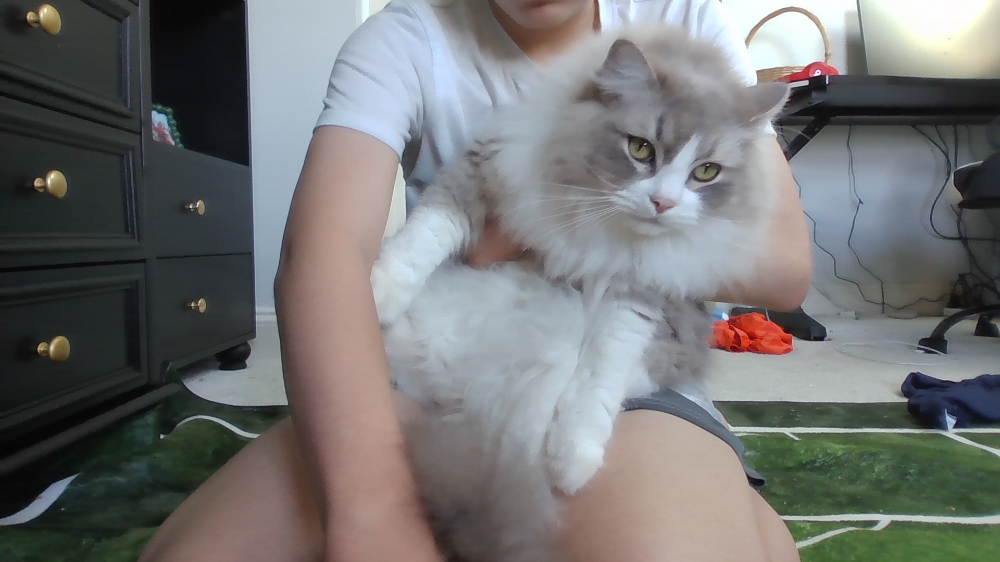

This a story
ABOUT A KID
WHO REALLY
LIKES CATS!
I love cats! Ever since I was a baby I freaking love CATS!
Hi my name is Isaac. You may know me by my gamertag RobinUgly1 or maybe Robinugly01
or maybe RobinIsUgly the one I use on minecraft idk it depends what platform I am on lol!
But anyway I love cats!
One of my favorite memories is I REALLY
REALLY wanted a cat for christmas and one christmas goes bye and...
nothing.
But then the next christmas and guess what I got MY FAMILY AND ME GOT A CAT NAMED...
GIZMO
I loved and still do love my new cat named Gimzo! He is so cute
and fluffy and small.
But then 2 years later HE GOT FAT now it is so hard to even
pick him up! He weighs over 20 pounds 2 years after we got him!
Then gimzo was getting bored and was kind of sad. We saw this in the summer of 2023.
We decided HE NEEDS A FRIEND!
Then we got our cat named...
TROOPER

TROOPER1.jpg